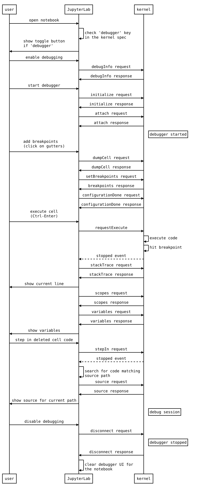
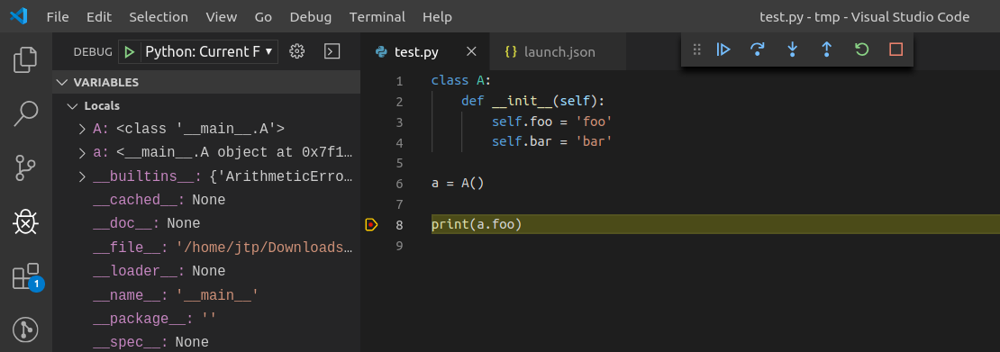

Contribute#
If you’re reading this section, you’re probably interested in contributing to JupyterLab. Welcome and thanks for your interest in contributing!
Please take a look at the Contributor documentation, familiarize yourself with using JupyterLab, and introduce yourself to the community (on the chat and/or the forum) and share what area of the project you are interested in working on. Please also see the Jupyter Community Guides.
You can help make it better by:
improving the code base and fixing bug (see below)
We have labeled some issues as good first issue or help wanted that we believe are good examples of small, self-contained changes. We encourage those that are new to the code base to implement and/or ask questions about these issues. You are not required to ask for a permission to work on such issue, but if you do and do not get a reply within 48 hours please assume that no one else is working on it (even if someone previously volunteered) and open a pull request with proposed implementation. If you are not certain about the implementation, using draft pull requests is encouraged.
If you believe you’ve found a security vulnerability in JupyterLab or any Jupyter project, please report it to security@ipython.org. If you prefer to encrypt your security reports, you can use this PGP public key.
General Guidelines for Contributing#
For general documentation about contributing to Jupyter projects, see the Project Jupyter Contributor Documentation and Code of Conduct.
Backwards Compatibility, Versions and Breaking Changes#
New versions of JupyterLab may break backwards compatibility with extensions and other Jupyter customizations. Breaking changes are kept to a minimum where possible. JupyterLab development and release cycles follow semantic versioning, so when breaking changes are necessary, they are communicated via the version numbering scheme. In short, this means that, for a JupyterLab version X.Y.Z:
Major version (X) number changes indicate breaking changes (NOT backwards compatible)
Minor Version (Y) number changes indicate a backwards compatible addition of new features
Patch version (Z) number changes indicate backwards compatible bug fixes
Contributions to JupyterLab extensions and other customizations should plan for possible breaking changes. Consider documenting your maintenance plans to users in these projects. You may also wish to consider pinning the major version of JupyterLab when developing extensions (in your package metadata).
We maintain a major version of JupyterLab for one year after its successor’s first release. See version lifecycle for details. JupyterLab v4 was released on May 15, 2023, so JupyterLab v3 will be maintained until May 15, 2024. JupyterLab v1 and v2 are no longer maintained. All JupyterLab v2 and v3 users are strongly advised to upgrade as soon as possible.
Languages, Tools and Processes#
All source code is written in TypeScript. See the Style Guide.
All non-python source code is formatted using prettier, and python source code is formatted using ruff.
When code is modified and committed, all staged files will be
automatically formatted using pre-commit git hooks (with help from
pre-commit). The benefit of
using a code formatters like prettier and ruff is that it removes the topic of
code style from the conversation when reviewing pull requests, thereby
speeding up the review process.
As long as your code is valid,
the pre-commit hook should take care of how it should look.
pre-commit and its associated hooks will automatically be installed when
you run pip install -e ".[dev,test]"
To install pre-commit manually, run the following:
pip install pre-commit
pre-commit install
You can invoke the pre-commit hook by hand at any time with:
pre-commit run
which should run any autoformatting on your code and tell you about any errors it couldn’t fix automatically. You may also install ruff integration into your text editor to format code automatically.
If you have already committed files before setting up the pre-commit
hook with pre-commit install, you can fix everything up using
pre-commit run --all-files. You need to make the fixing commit
yourself after that.
You may also use the prettier npm script (e.g. npm run prettier or
yarn prettier or jlpm prettier) to format the entire code base.
We recommend installing a prettier extension for your code editor and
configuring it to format your code with a keyboard shortcut or
automatically on save.
Submitting a Pull Request Contribution#
Generally, an issue should be opened describing a piece of proposed work and the issues it solves before a pull request is opened. A triager will ensure that your issue meets our definition of ready before we can merge any pull requests that relate to it.
Pull requests must target the development branch (= main) even if
it aims at addressing an issue seen in a stable release. Once the pull
request is merged on the development branch, it will be backported to
the stable branch using a bot action (or manually if the bot action
failed).
Note
Don’t hesitate to mention the targeted version in a PR description. A maintainer will set the milestone accordingly.
Issue Management#
Opening an issue lets community members participate in the design discussion, makes others aware of work being done, and sets the stage for a fruitful community interaction. When you open a new bug or enhancement request, please provide all the requested information in the issue template so that a responder will be able to triage your bug without delay.
A pull request should reference the issue it is addressing. Once the pull request is merged, the issue related to it will also be closed. If there is additional discussion around implementation the issue may be re-opened. Once 30 days have passed with no additional discussion, the lock bot will lock the issue. If additional discussion is desired, or if the pull request doesn’t fully address the locked issue, please open a new issue referencing the locked issue.
New issues are subject to triage. A developer with triage permissions (a triager) will do the following:
Read the issue
Search the existing issues and mark it as a duplicate if necessary
If additional information is required, add a comment requesting it
If the issue is ready to be worked on, assign it to a milestone
Apply appropriate labels to the issue (see examples below)
A developer may start to work on an issue as soon as it is filed. Please work with a triager if they have any questions about your issue so that your changes can be merged in without delay.
Definition of Ready#
One of the main goals of triage is to get issues into a state where they
are ready for someone to work on. Once a triager is satisfied that an
issue meets the definition below, they will remove the status:Needs Triage
label from it. We will not merge a pull request for an issue that still
needs triage.
Triagers should also ensure that the issue has appropriate labels that
describe it, such as labels with the pkg: prefix for issues that
affect one or more packages.
All requested information, where applicable, is provided. From the templates in JupyterLab’s issues:
For a bug:
Description, preferably including screen shots
Steps to reproduce
Expected behavior
Context, such as OS, browser, JupyterLab version, and output or log excerpts
For a feature request:
Description of the problem
Description of the proposed solution
Additional context
The issue should represent real, relevant, feasible work. In short, if a knowledgeable person were to be assigned this issue, they would be able to complete it with a reasonable amount of effort and assistance, and it furthers the goals of the Jupyter project.
Issues should be unique; triage is the best time to identify duplicates.
Bugs represent valid expectations for use of Jupyter products and services.
Expectations for security, performance, accessibility, and localization match generally-accepted norms in the community that uses Jupyter products.
The issue represents work that one developer can commit to owning, even if they collaborate with other developers for feedback. Excessively large issues should be split into multiple issues, each triaged individually, or into team-compass issues to discuss more substantive changes.
Labels Used by Triagers#
All new bugs and enhancement requests have the status:Needs Triage label.
On a regular basis, Jupyter contributors (triage reviewers or triagers)
review JupyterLab issues tagged
with status:Needs Triage, starting with the oldest, and determine
whether they meet the definition of ready.
Once triaged, if the issue is ready, the reviewer removes the
status:Needs Triage label; no additional label is required. If there
is not enough information in the issue as filed, the triage reviewer applies
the status:Needs Info label and leaves status:Needs Triage in place.
If an issue has remained in status:Needs Info for more than 14 days
without any follow-up communication, the reviewer should apply
status:Blocked. A blocked issue should be closed after another 14 days
pass without a reply that unblocks it.
Our expectation is that every new issue should be examined within a week of its creation.
Triagers should label easier/lower complexity issues as good first issue to
facilitate beginner contributions. A good first issue should have:
A clear, easily understood description with screen shots and expectations that do not require much familiarity with the project
Links, either in the description or in comments, to documentation and source code files that are relevant to the issue
Recommended points of contact, either by GitHub username or on other forums (Discourse, etc) where a contributor can get help
Unless an issue is time-sensitive, such as if it is a release blocker
for an imminent release, experienced Jupyter contributors should avoid
picking up recent issues with the good first issue label.
Tagging Issues with Labels#
Users without the commit rights to the JupyterLab repository can tag
issues with labels using the @meeseeksdev bot. For example: To apply
the label foo and bar baz to an issue, comment
@meeseeksdev tag foo "bar baz" on the issue.
Contributing from within the browser#
Contributing to JupyterLab codebase is also possible without setting up a local environment, directly from the Web browser:
GitHub’s codespace is available (free account have limited monthly resources).
GitHub’s built-in editor is suitable for contributing very small fixes,
more advanced github.dev editor can be accessed by pressing the dot (
.) key while in the JupyterLab GitHub repository,Gitpod integration is enabled, however it is not actively maintained,
jupyterlab-playground, allows to prototype JupyterLab extensions from within JupyterLab and can be run without installation in the browser using Binder.
Using Binder, you can test the current main branch and your changes within the browser as well. We recommend you have at least 8 GB of RAM for this. To build and launch an instance of the latest JupyterLab main, open this link in a new tab. The build takes about 7 minutes to complete.
To test your own branch hosted on GitHub, enter it on https://mybinder.org. If everything goes right, filling out the form takes about 2 minutes, and the build should take about 7 minutes again.
Setting up a local development environment#
Note
Look at the automated dev environment section, for some automation ways to set up a local development environment.
This section explains how to set up a local development environment. We assume you use GNU/Linux, macOS, or Windows Subsystem for Linux. If using Windows, we recommend installing Anaconda for windows and then using the Anaconda command prompt for all installation steps.
Installing Node.js and jlpm#
Building JupyterLab from its GitHub source code requires Node.js. The
development version requires Node.js version 20+, as defined in the
engines specification in
dev_mode/package.json.
If you use conda, you can get it with:
conda install -c conda-forge nodejs=20
If you use Homebrew on macOS:
brew install node
You can also use the installer from the Node.js website.
To check which version of Node.js is installed:
node -v
Using automation to set up a local development environment#
While there is a lot to learn by following the steps above, they can be automated to save time. The main advantages of using automation are: reduced time to get the environment up-and-running, reduced time to re-build the environment, better standardisation (“baseline”, reproducible environments). This section shows how to do that using VS Code dev containers, Docker and Vagrant.
Setup for VS Code#
To start a local development environment for JupyterLab using VS Code dev containers, you need to:
Install the VS Code Dev Containers extension.
Fork the JupyterLab repository.
Clone your fork locally:
git clone https://github.com/<your-github-username>/jupyterlab.git
Open the local clone with VS Code.
Open the repository in a container. VS Code should prompt you with a pop-up to do so. In case it does not, you can click on the icon
><on the bottom left. Then choose Reopen in container.
Note
It will take quite some times the first time.
Setup using Docker#
To start a JupyterLab development container in a UNIX system with docker installed:
Fork the JupyterLab repository.
Start the container:
git clone https://github.com/<your-github-username>/jupyterlab.git
cd jupyterlab
bash docker/start.sh
The above command will build the docker image if it does not exist, then start the container with JupyterLab running in watch mode. The port 8888 is exposed and the current JupyterLab repo is mounted into the container. Then you can start developing JupyterLab with your favorite IDE, JupyterLab will be rebuilt on the fly.
Other available commands:
bash docker/start.sh dev 4567 # Start JupyterLab dev container at port 4567
bash docker/start.sh stop # Stop the running container
bash docker/start.sh clean # Remove the docker image
bash docker/start.sh build # Rebuild the docker image
# Log into the container's shell with the JupyterLab environment activated.
# It's useful to run the tests or install dependencies.
bash docker/start.sh shell
To add TypeScript dependencies to the project, you need to log into the container’s shell, install the dependencies to update the package.json and yarn.lock files, and then rebuild the docker image.
bash docker/start.sh shell
# In the container shell
jlpm add ...
exit
# Back to host shell
bash docker/start.sh build
Setup using Vagrant#
A practical example can be found there and
includes a Vagrantfile, the bootstrap files and additional documentation.
Installing JupyterLab#
Fork the JupyterLab repository.
Then use the following steps:
git clone https://github.com/<your-github-username>/jupyterlab.git
cd jupyterlab
pip install -e ".[dev,test]"
jlpm install
jlpm run build # Build the dev mode assets
# Build the core mode assets
jlpm run build:core
# Build the app dir assets
jupyter lab build
Frequent issues#
Important
On Windows, symbolic links need to be activated on Windows 10 or above for Python version 3.8 or higher by activating the ‘Developer Mode’. That may not be allowed by your administrators. See Activate Developer Mode on Windows for instructions.
A few of the scripts will run “python”. If your target python is called something else (such as “python3”) then parts of the build will fail. You may wish to build in a conda environment, or make an alias.
The
jlpmcommand is a JupyterLab-provided, locked version of the yarn package manager. If you haveyarninstalled already, you can use theyarncommand when developing, and it will use the local version ofyarninjupyterlab/yarn.jswhen run in the repository or a built application directory.If you decide to use the
jlpmcommand and encounter thejlpm: command not founderror, try adding the user-level bin directory to yourPATHenvironment variable. You already installedjlpmalong with JupyterLab in the previous command, butjlpmmight not be accessible due toPATHenvironment variable related issues. If you are using a Unix derivative (FreeBSD, GNU / Linux, OS X), you can achieve this by usingexport PATH="$HOME/.local/bin:$PATH"command.At times, it may be necessary to clean your local repo with the command
npm run clean:slate. This will clean the repository, and re-install and rebuild.If
pipgives aVersionConflicterror, it usually means that the installed version ofjupyterlab_serveris out of date. Runpip install --upgrade jupyterlab_serverto get the latest version.To install JupyterLab in isolation for a single conda/virtual environment, you can add the
--sys-prefixflag to the extension activation above; this will tie the installation to thesys.prefixlocation of your environment, without writing anything in your user-wide settings area (which are visible to all your envs):You can run
jlpm run build:dev:prodto build more accurate sourcemaps that show the original Typescript code when debugging. However, it takes a bit longer to build the sources, so is used only to build for production by default.
For installation instructions for contributors who want to write documentation, please see Writing Documentation
Run JupyterLab#
Start JupyterLab in development mode:
jupyter lab --dev-mode
Development mode ensures that you are running the JavaScript assets that are built in the dev-installed Python package. Note that when running in dev mode, extensions will not be activated by default - refer documentation on extension development to know more.
When running in dev mode, a red stripe will appear at the top of the page; this is to indicate running an unreleased version.
If you want to change the TypeScript code and rebuild on the fly (needs page refresh after each rebuild):
jupyter lab --dev-mode --watch
Build and Run the Tests#
jlpm run build:testutils
jlpm test
You can run tests for an individual package by changing to the appropriate package folder:
cd packages/notebook
jlpm run build:test
jlpm test --runInBand
Note
--runInBand option will run all tests serially in the current process.
We advice to use it as some tests are spinning a Jupyter Server that does not
like to be executed in parallel.
We use jest for all tests, so standard jest workflows apply.
Tests can be debugged in either VSCode or Chrome. It can help to add an
it.only to a specific test when debugging. All of the test*
scripts in each package accept jest cli
options.
VSCode Debugging#
To debug in VSCode, open a package folder in VSCode. We provide a launch
configuration in each package folder. In a terminal, run
jlpm test:debug:watch. In VSCode, select “Attach to Jest” from the
“Run” sidebar to begin debugging. See VSCode docs on
debugging for
more details.
Chrome Debugging#
To debug in Chrome, run jlpm test:debug:watch in the terminal. Open
Chrome and go to chrome://inspect/. Select the remote device and
begin debugging.
Testing Utilities#
There are some helper functions in testutils (which is a public npm
package called @jupyterlab/testutils) that are used by many of the
tests.
For tests that rely on @jupyterlab/services (starting kernels,
interacting with files, etc.), there are two options. If a simple
interaction is needed, the Mock namespace exposed by testutils
has a number of mock implementations (see testutils/src/mock.ts). If
a full server interaction is required, use the JupyterServer class.
We have a helper function called testEmission to help with writing
tests that use Lumino signals, as well as a framePromise
function to get a Promise for a requestAnimationFrame. We
sometimes have to set a sentinel value inside a Promise and then
check that the sentinel was set if we need a promise to run without
blocking.
Internationalization#
Translatable strings update#
The translatable strings update cannot occur on patch release. They must be delayed on minor or major versions.
Performance Testing#
Benchmark of JupyterLab is done using Playwright. The actions measured are:
Opening a file
Switching from the file to a simple text file
Switching back to the file
Closing the file
Two files are tested: a notebook with many code cells and another with many markdown cells.
The test is run on the CI by comparing the result in the commit at which a PR branch started and the PR branch head on the same CI job to ensure using the same hardware. The benchmark job is triggered on:
Approved PR review
PR review that contains the sentence
please run benchmark
The tests are located in the subfolder galata/test/benchmark. And they can be
executed with the following command:
jlpm run test:benchmark
A special report will be generated in the folder benchmark-results that will contain 4 files:
lab-benchmark.json: The execution time of the tests and some metadata.lab-benchmark.md: A report in Markdownlab-benchmark.png: A comparison of execution time distributionlab-benchmark.vl.json: The Vega-Lite description used to produce the PNG file.
The reference, tagged expected, is stored in lab-benchmark-expected.json. It can be
created using the -u option of Playwright; i.e. jlpm run test:benchmark -u.
Benchmark parameters#
The benchmark can be customized using the following environment variables:
BENCHMARK_NUMBER_SAMPLES: Number of samples to compute the execution time distribution; default 20.BENCHMARK_OUTPUTFILE: Benchmark result output file; defaultbenchmark.json. It is overridden in theplaywright-benchmark.config.js.BENCHMARK_REFERENCE: Reference name of the data; default isactualfor current data andexpectedfor the reference.
More tests can be carried out manually on JupyterLab branches and run weekly on the default branch in jupyterlab/benchmarks repository.
Visual Regression and UI Tests#
As part of JupyterLab CI workflows, UI tests are run with visual regression checks. Galata is used for UI testing. Galata provides Playwright helpers to control and inspect JupyterLab UI programmatically.
UI tests are run for each commit into JupyterLab project in PRs or direct commits. Code
changes can sometimes cause UI tests to fail for various reasons. After each test run,
Galata generates a user friendly test result report which can be used to inspect failing
UI tests. Result report shows the failure reason, call-stack up to the failure and
detailed information on visual regression issues. For visual regression errors, reference
image and test capture image, along with diff image generated during comparison are
provided in the report. You can use these information to debug failing tests. Galata test
report can be downloaded from GitHub Actions page for a UI test run. Test artifact is
named galata-report and once you extract it, you can access the report by launching
a server to serve the files python -m http.server -d <path-to-extracted-report>.
Then open http://localhost:8000/ with your web browser.
Main reasons for UI test failures are:
A visual regression caused by code changes:
Sometimes unintentional UI changes are introduced by modifications to project source code. Goal of visual regression testing is to detect this kind of UI changes. If your PR / commit is causing visual regression, then debug and fix the regression caused. You can locally run and debug the UI tests to fix the visual regression. To debug your test, you may run
PWDEBUG=1 jlpm playwright test <path-to-test-file>. Once you have a fix, you can push the change to your GitHub branch and test with GitHub actions.An intended update to user interface:
If your code change is introducing an update to UI which causes existing UI Tests to fail, then you will need to update reference image(s) for the failing tests. In order to do that, you can post a comment on your PR with the following content:
please update galata snapshots: A bot will push a new commit to your PR updating galata test snapshots.please update documentation snapshots: A bot will push a new commit to your PR updating documentation test snapshots.please update snapshots: Combine the two previous comments effects.
The bot will react with +1 emoji to indicate that the run started and then comment back once it concluded. This feature is restricted to a subset of users with higher privileges due to security concerns.
For more information on UI Testing, please read the UI Testing developer documentation and Playwright documentation.
Good Practices for Integration tests#
Here are some good practices to follow when writing integration tests:
Don’t compare multiple screenshots in the same test; if the first comparison breaks, it will require running multiple times the CI workflow to fix all tests.
Contributing to the debugger front-end#
To make changes to the debugger extension, a kernel with support for debugging is required.
Check out the user documentation to learn how to install such kernel: Debugger.
Then refresh the page and the debugger sidebar should appear in the right area.
The Debugger Adapter Protocol#
The following diagram illustrates the types of messages sent between the JupyterLab extension and the kernel.
Inspecting Debug Messages in VS Code#
Inspecting the debug messages in VS Code can be useful to understand when debug requests are made (for example triggered by a UI action), and to compare the behavior of the JupyterLab debugger with the Python debugger in VS Code.
The first step is to create a test file and a debug configuration (launch.json):
{
"version": "0.2.0",
"configurations": [
{
"name": "Python: Current File",
"type": "python",
"request": "launch",
"program": "${file}",
"console": "integratedTerminal",
"env": { "DEBUGPY_LOG_DIR": "/path/to/logs/folder" }
}
]
}
Then start the debugger:
The content of the log file looks like this:
...
D00000.032: IDE --> {
"command": "initialize",
"arguments": {
"clientID": "vscode",
"clientName": "Visual Studio Code",
"adapterID": "python",
"pathFormat": "path",
"linesStartAt1": true,
"columnsStartAt1": true,
"supportsVariableType": true,
"supportsVariablePaging": true,
"supportsRunInTerminalRequest": true,
"locale": "en-us"
},
"type": "request",
"seq": 1
}
...
With:
IDE= VS CodePYD= pydev debuggerMessages follow the DAP
References#
Dump cell and state restoration: jupyterlab/debugger#52
Protocol Overview: https://microsoft.github.io/debug-adapter-protocol/overview
Specification: https://microsoft.github.io/debug-adapter-protocol/specification
Build and run the stand-alone examples#
To install and build the examples in the examples directory:
jlpm run build:examples
To run a specific example, change to the examples directory (i.e.
examples/filebrowser) and enter:
python main.py
Debugging in the Browser#
All methods of building JupyterLab produce source maps. The source maps
should be available in the source files view of your browser’s
development tools under the webpack:// header.
When running JupyterLab normally, expand the ~ header to see the
source maps for individual packages.
When running in --dev-mode, the core packages are available under
packages/, while the third party libraries are available under
~. Note: it is recommended to use jupyter lab --watch --dev-mode
while debugging.
When running a test, the packages will be available at the top level
(e.g. application/src), and the current set of test files available
under /src. Note: it is recommended to use jlpm run watch in the
test folder while debugging test options. See
above for more info.
High level Architecture#
The JupyterLab application is made up of two major parts:
an npm package
a Jupyter server extension (Python package)
Each part is named jupyterlab. The developer tutorial
documentation
provides additional architecture information.
The NPM Packages#
The repository consists of many npm packages that are managed using the
lerna build tool. The npm package source files are in the packages/
subdirectory.
Build the NPM Packages from Source#
git clone https://github.com/jupyterlab/jupyterlab.git
cd jupyterlab
pip install -e .
jlpm
jlpm run build:packages
Rebuild
jlpm run clean
jlpm run build:packages
Writing Documentation#
Documentation is written in Markdown and reStructuredText. In
particular, the documentation on our Read the Docs page is written in
reStructuredText. To ensure that the Read the Docs page builds, you’ll
need to install the documentation dependencies with pip:
pip install -e ".[docs]"
To test the docs run:
python -m pytest --check-links -k .md . || python -m pytest --check-links -k .md --lf .
The Read the Docs pages can be built using make:
cd docs
make html
The JupyterLab API reference documentation is also included in the previous step. To access the documentation, first launch a server to serve the generated files:
make serve
And then go to http://localhost:8000/ in your browser.
The JupyterLab API reference documentation can be built separately using jlpm:
jlpm run docs
Writing Style#
Write documentation in the second person, referring to the reader as “you”. Do not use the first person plural “we.” The author of the documentation is not sitting next to the user, so using “we” can lead to frustration when things don’t work as expected.
Avoid words that trivialize using JupyterLab such as “simply” or “just.” Tasks that developers find simple or easy may not be for users.
Write in the active tense. For example, “drag the notebook cells…” rather than “notebook cells can be dragged…”.
The beginning of each section should begin with a short (1–2 sentence) high-level description of the topic, feature or component.
Use “enable” rather than “allow” to indicate what JupyterLab makes possible for users. Using “allow” connotes that we are giving them permission, whereas “enable” connotes empowerment.
User Interface Naming Conventions#
Documents, Files, and Activities#
Refer to files as either files or documents, depending on the context.
Documents are more human centered. If human viewing, interpretation, or interaction is an important part of the experience, use the term “document”. For example, notebooks and Markdown files will often be referred to as documents except in the context of a file system (e.g., the notebook filename).
Use the term files in a less human-focused context. For example, refer to files in relation to a file system or file name.
Activities are either an opened document or another UI panel that is not related to a file, such as terminals, consoles or the inspector.
Notebook Cells#
A notebook contains cells, each of which have input and one or more outputs. When the user runs a cell, the kernel reads and executes the input and generates outputs. The notebook then displays the cell’s output. The term output describes one of possibly multiple results of running a cell. Cell output describes the collective output of one cell. Use outputs of all cells to describe all outputs from all cells.
Command Names#
Command names appear in menus, in the Command Palette, and in toolbar buttons (where the name typically appears on hover).
Keep command names short, concise, and unambiguous.
Add an ellipsis (…) after any command name that requires more options. This tells the user that they should expect a pop-up window to appear before they execute the command.
Commands should use verbs in the imperative case. Do not use articles with nouns. For example, write “Clear Cell”, not “Clear the Cell” or “Clearing Cell”.
Element Names#
The generic content area of a tabbed UI is a panel. Refer to a panel by its most specific name, such as “File browser.” Tab bars have tabs that let a user view different panels.
The menu bar contains menu items that have their own submenus.
Refer to the main work area as the work area when the name is unambiguous.
When describing elements in the UI, prefer colloquial names over technical names. For example, use “File browser” instead of “Files panel”.
Write most element names in lowercase. These names include:
tab
panel
menu bar
sidebar
file
document
activity
tab bar
main work area
file browser
command palette
cell inspector
code console
Write the following sections of the user interface with one or more initial capitals, mirroring their use in the UI:
Activity Bar
File menu
Files tab
Running panel
Tabs panel
Simple Interface mode
See The JupyterLab Interface for descriptions of elements in the UI.
The Jupyter Server Extension#
The Jupyter server extension source files are in the jupyterlab/ subdirectory. To use this extension, make sure the Jupyter Notebook server version 4.3 or later is installed.
Build the JupyterLab server extension#
When you make a change to JupyterLab npm package source files, run:
jlpm run build
to build the changes, and then refresh your browser to see the changes.
To have the system build after each source file change, run:
jupyter lab --dev-mode --watch
Build Utilities#
There is a range of build utilities for maintaining the repository. To
get a suggested version for a library use
jlpm run get:dependency foo. To update the version of a library
across the repo use jlpm run update:dependency foo ^latest. To
remove an unwanted dependency use jlpm run remove:dependency foo.
The key utility is jlpm run integrity, which ensures the integrity
of the packages in the repo. It will:
Ensure the core package version dependencies match everywhere.
Ensure imported packages match dependencies.
Ensure a consistent version of all packages.
Manage the meta package.
The packages/metapackage package is used to build all of the
TypeScript in the repository at once, instead of 50+ individual builds.
The integrity script also allows you to automatically add a dependency
for a package by importing from it in the TypeScript file, and then
running: jlpm run integrity from the repo root.
We also have scripts for creating and removing packages in
packages/, jlpm run create:package and
jlpm run remove:package. When creating a package, if it is meant to
be included in the core bundle, add the
jupyterlab: { coreDependency: true } metadata to the
package.json. Packages with extension or mimeExtension
metadata are considered to be a core dependency unless they are
explicitly marked otherwise.
Testing Changes to External Packages#
Linking/Unlinking Packages to JupyterLab#
If you want to make changes to one of JupyterLab’s external packages
(for example, Lumino) and test
them out against your copy of JupyterLab, you can easily do so using the
link command:
Make your changes and then build the external package
Link JupyterLab to modded package
navigate to top level of your JupyterLab repo, then run
jlpm link <path-to-external-repo> --all
3. You can then (re)build JupyterLab (eg jlpm run build) and your
changes should be picked up by the build.
To restore JupyterLab to its original state, you use the unlink
command:
Unlink JupyterLab and modded package
navigate to top level of your JupyterLab repo, then run
jlpm unlink <path-to-external-repo> --all
Reinstall original version of the external package in JupyterLab
run
jlpm install --check-files
3. You can then (re)build JupyterLab and everything should be back to default.
Possible Linking Pitfalls#
If you’re working on an external project with more than one package, you’ll probably have to link in your copies of every package in the project, including those you made no changes to. Failing to do so may cause issues relating to duplication of shared state.
Specifically, when working with Lumino, you’ll probably have to link
your copy of the "@lumino/messaging" package (in addition to
whatever packages you actually made changes to). This is due to
potential duplication of objects contained in the MessageLoop
namespace provided by the messaging package.
Keyboard Shortcuts#
Typeset keyboard shortcuts as follows:
Monospace typeface, with spaces between individual keys:
Shift Enter.For modifiers, use the platform independent word describing key:
Shift.For the
Accelkey use the phrase:Command/Ctrl.Don’t use platform specific icons for modifier keys, as they are difficult to display in a platform specific way on Sphinx/RTD.
Screenshots and Animations#
Our documentation should contain screenshots and animations that illustrate and demonstrate the software. Here are some guidelines for preparing them:
Make sure the screenshot does not contain copyrighted material (preferable), or the license is allowed in our documentation and clearly stated.
For screenshots, you should prefer creating visual tests. This allows to update them dynamically. Those tests are defined in
galata/test/documentationfolder.If taking a png screenshot, use the Firefox or Chrome developer tools to do the following:
set the browser viewport to 1280x720 pixels
set the device pixel ratio to 1:1 (i.e., non-hidpi, non-retina)
screenshot the entire viewport using the browser developer tools. Screenshots should not include any browser elements such as the browser address bar, browser title bar, etc., and should not contain any desktop background.
If creating a movie, adjust the settings as above (1280x720 viewport resolution, non-hidpi) and use a screen capture utility of your choice to capture just the browser viewport.
For PNGs, reduce their size using
pngquant --speed 1 <filename>. The resulting filename will have-fs8appended, so make sure to rename it and use the resulting file. Commit the optimized png file to the main repository. Each png file should be no more than a few hundred kilobytes.For movies, upload them to the IPython/Jupyter YouTube channel and add them to the jupyterlab-media repository. To embed a movie in the documentation, use the
www.youtube-nocookie.comwebsite, which can be found by clicking on the ‘privacy-enhanced’ embedding option in the Share dialog on YouTube. Add the following parameters the end of the URL?rel=0&showinfo=0. This disables the video title and related video suggestions.Screenshots or animations should be preceded by a sentence describing the content, such as “To open a file, double-click on its name in the File Browser:”.
We have custom CSS that will add box shadows, and proper sizing of screenshots and embedded YouTube videos. See examples in the documentation for how to embed these assets.
To help us organize screenshots and animations, please name the files with a prefix that matches the names of the source file in which they are used:
sourcefile.rst sourcefile_filebrowser.png sourcefile_editmenu.png
This will help us to keep track of the images as documentation content evolves.
Notes#
By default, the application will load from the JupyterLab staging directory (default is
<sys-prefix>/share/jupyter/lab/build. If you wish to run the core application in<git root>/jupyterlab/build, runjupyter lab --core-mode. This is the core application that will be shipped.If working with extensions, see the extension documentation.
The npm modules are fully compatible with Node/Babel/ES6/ES5. Simply omit the type declarations when using a language other than TypeScript.